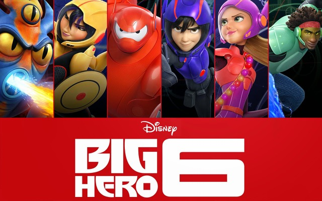

|
With all the heart and humor audiences expect from Walt Disney Animation Studios, “Big Hero 6” is an action-packed comedy adventure that introduces Baymax, a lovable, personal companion robot, who forms a special bond with robotics prodigy Hiro Hamada. When a devastating turn of events catapults them into the midst of a dangerous plot unfolding in the streets of San Fransokyo, Hiro turns to Baymax and his diverse group of friends— adrenaline junkie Go Go Tomago, neatnik Wasabi, chemistry whiz Honey Lemon and fanboy Fred — who transform into a band of unlikely heroes. Bring home Disney's “Big Hero 6,” featuring comic-book-style action and hilarious, unforgettable characters — it's fun for the whole family! Ryan Potter as Hiro Hamada, a 14-year-old robotics prodigy. Speaking of the character, co-director Don Hall said "Hiro is transitioning from boy to man, it's a tough time for a kid and some teenagers develop that inevitable snarkiness and jaded attitude. Luckily Ryan is a very likeable kid. So no matter what he did, he was able to take the edge off the character in a way that made him authentic, but appealing". Big Hero 6 premiered on October 23, 2014 as the opening film at the Tokyo International Film Festival. The world premiere of Big Hero 6 in 3D took place at the Abu Dhabi Film Festival on October 31, 2014. It was theatrically released in the United States on November 7, 2014 with limited IMAX international showings. Theatrically, the film was accompanied by the Walt Disney Animation Studios short, Feast. |
 |
|---|